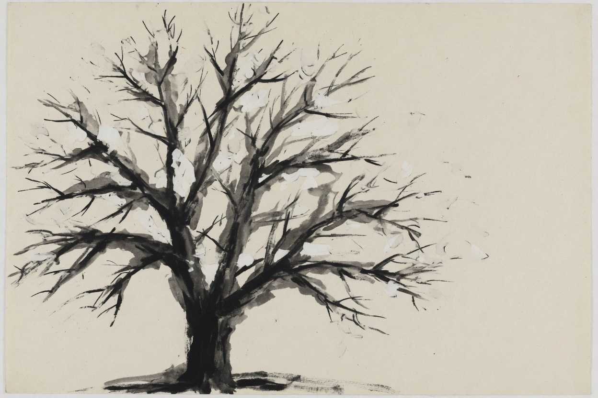
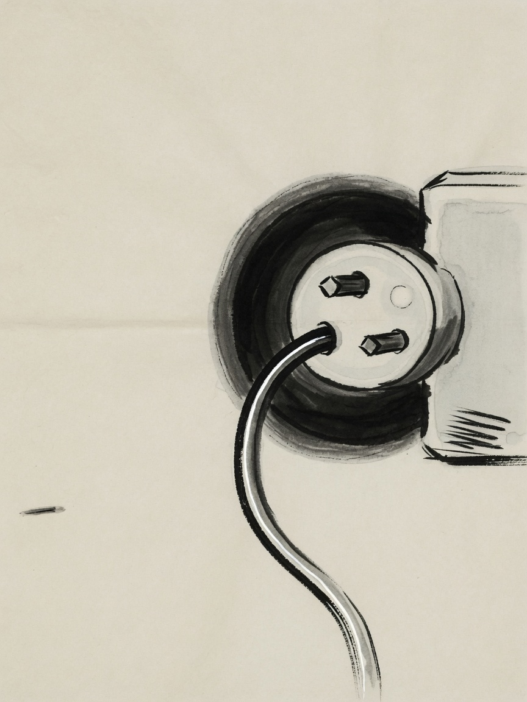
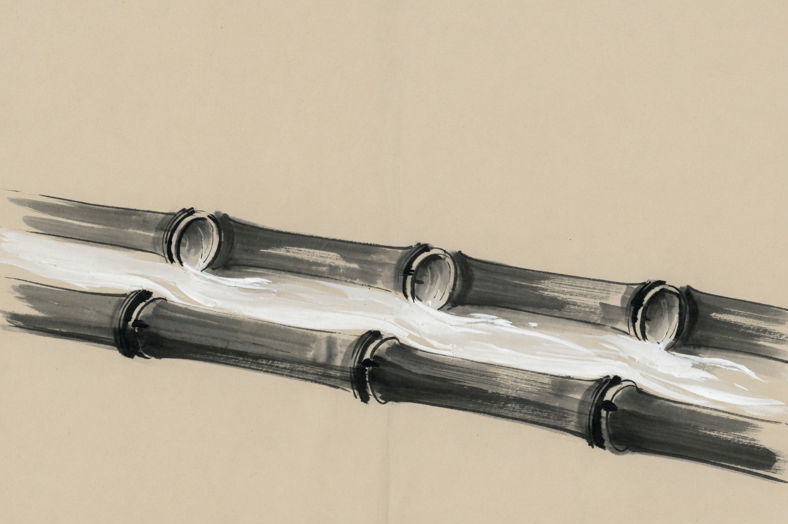
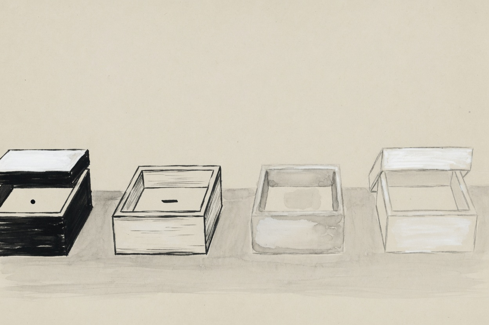
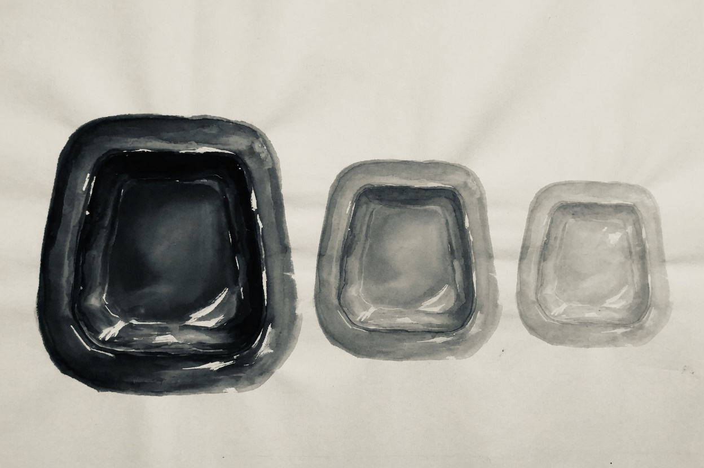

没有盘符
一一棵树
没有 C 盘 D 盘。整个世界是一棵树。
根叫「斜杠」。书桌在家里，开关在墙上，后来搬进来的大家电放在另间屋。硬盘、进程、网卡，最后都能在某个文件名下面找到。
找东西，就是顺着枝杈走。
一切皆文件。枝杈就是路径。

工程一册
地板比屋顶先铺

模型再聪明，也得有个落脚的地方。
这一册不讲怎么装软件。讲地板：目录、水管、盒子、门缝、模子。
没有盘符
没有 C 盘 D 盘。整个世界是一棵树。
根叫「斜杠」。书桌在家里，开关在墙上，后来搬进来的大家电放在另间屋。硬盘、进程、网卡，最后都能在某个文件名下面找到。
找东西，就是顺着枝杈走。
一切皆文件。枝杈就是路径。

出口接入口
厨房里接水管。这一截的出口，是下一截的入口。
先看有什么，再捞想要的，再交给下一截。命令不是一句咒语。是一截一截接上的水管。
出口，就是下一截的入口。

先分清
动手写之前，先分清四只盒子：数字、字、清单、字典。
盒子弄混了，后面全是修箱子。别急着写模型。先知道手里拿的是哪一只。
先分清四只盒子。

不进门
你不进门。你把信封推进门缝，等人从里面把回信塞出来。
网址就是门牌。信封里写要什么。门后也许是模型，也许只是一张表。你不用知道屋里怎么忙。
把信封推进去就好。
能跑就封进箱
在自己电脑上能跑，换一台就碎了。
于是做个模子。电脑、库、文件，一起倒进去。换地方，再倒出来。不是魔法。是把「能跑」封进一个可以搬的箱子。
模子可以复印。箱子可以搬走。
